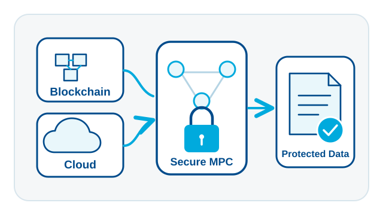

Privacy-Preserving Mechanisms and Protocols
- We design mechanisms to protect privacy in diverse environments, including blockchain and cloud systems.
- We apply cryptographic techniques such as multi-party computation (MPC) to protect privacy while data is in use.